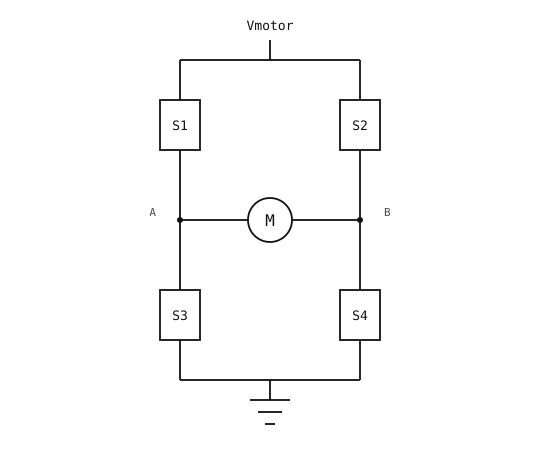

3.15. Řízení stejnosměrného motoru¶
Stejnosměrný kartáčový motor je cívka drátu na hřídeli umístěná v magnetickém poli. Když cívkou protéká proud, pole na ni působí silou; tato síla se mění na točivý moment na hřídeli. Kartáče uvnitř motoru přepínají směr proudu v cívce při otáčení hřídele, takže točivý moment vždy tlačí hřídel stejným směrem. Přiveďte stejnosměrné napětí na oba vývody motoru a hřídel se roztočí; prohoďte polaritu a roztočí se opačným směrem.
Motory obvykle vyžadují stovky miliampér až několik ampér při napájecích napětích vyšších, než je logická úroveň kamery 3,3 V. GPIO pin dokáže dodat řádově 25 mA a nedokáže obrátit polaritu – umí pouze přepínat mezi svými dvěma úrovněmi. Budicí stupeň mezi kamerou a motorem musí přenášet proud motoru, vést samostatné napájení motoru s vyšším napětím a umožnit kameře obrátit polaritu na povel. Standardním řešením je čtyřtranzistorový H-můstek.
3.15.1. H-můstek¶
H-můstek tvoří čtyři spínače uspořádané do tvaru H okolo motoru:

H-můstek: čtyři spínače (S1 – S4) připojují motor M mezi Vmotor a zem.¶
Sepnutím různých dvojic spínačů se volí, co motor vidí na svých vývodech:
S1 + S4 sepnuté, S2 + S3 rozepnuté. Proud teče z Vmotor přes
S1doA, přes motor doBa přesS4do země. Motor se točí jedním směrem.S2 + S3 sepnuté, S1 + S4 rozepnuté. Proud teče motorem opačným směrem. Motor se točí opačným směrem.
Všechny čtyři rozepnuté. Oba vývody motoru jsou plovoucí; motor dobíhá setrvačností.
S3 + S4 sepnuté (nebo S1 + S2 sepnuté). Oba vývody motoru jsou připojeny ke stejné úrovni; vlastní kinetická energie motoru vyvolá proud, který sepnutá dvojice zkratuje a přemění na teplo. Motor brzdí.
Nepřípustnou kombinací je sepnutí obou spínačů ve stejném sloupci – S1 + S3 nebo S2 + S4 –, čímž vznikne zkrat z Vmotor přímo do země. Tomu se říká shoot-through (průraz) a kód kamery to nesmí dovolit.
V praxi jsou čtyři spínače tvořeny MOSFETy (uvedenými na stránce Posun napěťových úrovní) uvnitř integrovaného budicího obvodu. Čip vystavuje dva nebo tři vstupní piny s logickou úrovní, které se interně mapují na čtyři spínače, a obsahuje blokovací logiku, jež brání průrazu, takže kód kamery to nemusí řešit přímo.
3.15.2. PWM a indukčnost motoru¶
Nastavení otáček motoru vyžaduje víc než jen plný chod a úplné vypnutí. Trik je stejný jako u LED v Stmívání LED pomocí PWM: budit pohon vysokou frekvencí a nechat zátěž výsledek zprůměrovat. U LED zajišťovalo průměrování oko; u motoru to dělá sama cívka.
Cívka motoru má značnou indukčnost. Proud cívkou se nemůže měnit okamžitě; mění se rychlostí úměrnou napětí na ní. Spínáním můstku zapnuto a vypnuto na 20 kHz se proud cívkou během každé fáze sepnutí zvyšuje a během fáze rozepnutí musí proud dál téct – cívka obrátí napětí na sobě samé, aby jej udržela.
Kdyby tento proud neměl kam téct, prudce by zvýšil napětí na právě rozepnutém spínači a mohl by tranzistor poškodit. Volnoběžné diody na každém spínači – často jen vlastní substrátové diody MOSFETů uvnitř budicího čipu – dávají proudu potřebnou cestu. Proud teče přes diodu a zpět přes jeden ze stále sepnutých spínačů, čímž uzavírá volnoběžnou smyčku, v níž proud postupně klesá na malých odporech můstku a samotného motoru. Dioda také udržuje napětí na rozepnutém spínači v rozsahu jednoho úbytku na diodě od té úrovně, ke které se smyčka vrací, bezpečně uvnitř pracovní oblasti MOSFETu.
Točivý moment vytváří průměrný proud za každou periodu PWM a tento průměr sleduje střídu lineárně – zdvojnásobení střídy zhruba zdvojnásobí točivý moment a při konstantní zátěži zhruba zdvojnásobí otáčky. Na rozdíl od stmívání LED, kde nelineární odezva oka vyžaduje křivku, lineární nárůst hodnoty duty_u16 již odpovídá lineárnímu nárůstu výkonu motoru.
Frekvence PWM musí překonat pouze dva prahy:
Nad ~20 kHz je nosná frekvence mimo slyšitelné pásmo člověka. Pod touto hodnotou magnetická síla na cívku roste a klesá s každým pulzem PWM a vinutí i plechy se fyzicky chvějí na nosné frekvenci – motor se v podstatě stává malým reproduktorem vydávajícím tón o výšce PWM.
Výrazně nad ~50 kHz začínají MOSFETy a jejich budiče hradel ztrácet účinnost kvůli spínacím ztrátám. Během každého přechodu zap-vyp nese MOSFET na okamžik současně značné napětí i značný proud a rozptyluje malý výboj výkonu ve formě tepla; kapacita hradla MOSFETů se navíc musí v každém cyklu nabít a vybít, což hradí budicí čip. Obě ztráty rostou s frekvencí PWM, takže při vysokých rychlostech může teplo ze spínání konkurovat teplu z vedení proudu motoru.
20 kHz je pohodlná výchozí hodnota pro motory hobby velikosti.
3.15.3. Buzení H-můstku¶
Budicí čip H-můstku se dvěma vstupy mapuje IN1 a IN2 na čtyři spínače zhruba takto:
IN1 = 0, IN2 = 0– dobíhání (všechny čtyři spínače rozepnuté).IN1 = 1, IN2 = 0– buzení v jednom směru.IN1 = 0, IN2 = 1– buzení v opačném směru.IN1 = 1, IN2 = 1– brzdění.
Buzení obou vstupů jako PWM výstupů umožňuje kameře nastavit směr volbou toho, který ze dvou pinů nese střídu, a otáčky samotnou hodnotou střídy:
import time
from machine import PWM, Pin
in1 = PWM(Pin("P7"), freq=20_000, duty_u16=0)
in2 = PWM(Pin("P8"), freq=20_000, duty_u16=0)
def drive_a(speed): # speed: 0..65535
in1.duty_u16(speed)
in2.duty_u16(0)
def drive_b(speed):
in1.duty_u16(0)
in2.duty_u16(speed)
def coast():
in1.duty_u16(0)
in2.duty_u16(0)
def brake():
in1.duty_u16(65535)
in2.duty_u16(65535)
drive_a(32768) # half speed in direction A
time.sleep(2)
drive_b(16384) # quarter speed in direction B
time.sleep(2)
coast()
Rampa od vypnutí na plný výkon a zpět zajistí plynulý rozjezd a zastavení:
for d in range(0, 65535, 256):
in1.duty_u16(d)
time.sleep_ms(10)
for d in range(65535, 0, -256):
in1.duty_u16(d)
time.sleep_ms(10)
3.15.4. Budiče se směrem a otáčkami¶
Druhá skupina čipů H-můstku nabízí pohodlnější rozhraní: jeden digitální vstup směru (často označený DIR nebo PH jako „phase“) plus jeden vstup otáček (často PWM nebo EN jako „enable“). Pin směru určuje, kterým směrem můstek budí; střída na pinu otáček nastavuje průměrný proud.
To se ze softwaru ovládá snáze než schéma se dvěma PWM vstupy. Oba signály odpovídají tomu, jak se úloha obvykle formuluje – „otoč se tímto směrem těmito otáčkami“ –, takže kód může říct set_direction(forward); set_speed(50) místo větvení mezi in1 a in2. Je potřeba jen jeden PWM kanál, což uvolňuje druhý kanál na stejném časovači pro nesouvisející úlohu. A pin směru může mezi změnami zůstat ustálený bez opětovného spouštění můstku, takže změna otáček při pevně daném směru se dotkne jen jednoho registru.
import time
from machine import PWM, Pin
dir_pin = Pin("P8", Pin.OUT)
speed = PWM(Pin("P7"), freq=20_000, duty_u16=0)
def drive(direction, speed_u16):
dir_pin.value(direction) # 0 or 1
speed.duty_u16(speed_u16) # 0..65535
drive(0, 32768) # direction A at half speed
time.sleep(2)
drive(1, 16384) # direction B at quarter speed
time.sleep(2)
speed.duty_u16(0) # stop
Co u tohoto druhu budiče vlastně dělá „zastavení“ – dobíhání nebo brzdění – závisí na čipu. U budiče se dvěma vstupy volí kód kamery (oba vstupy nízké pro dobíhání, oba vysoké pro brzdění); u budiče se směrem a otáčkami rozhoduje čip, takže než se na některé chování spolehnete, vyplatí se nahlédnout do katalogového listu.